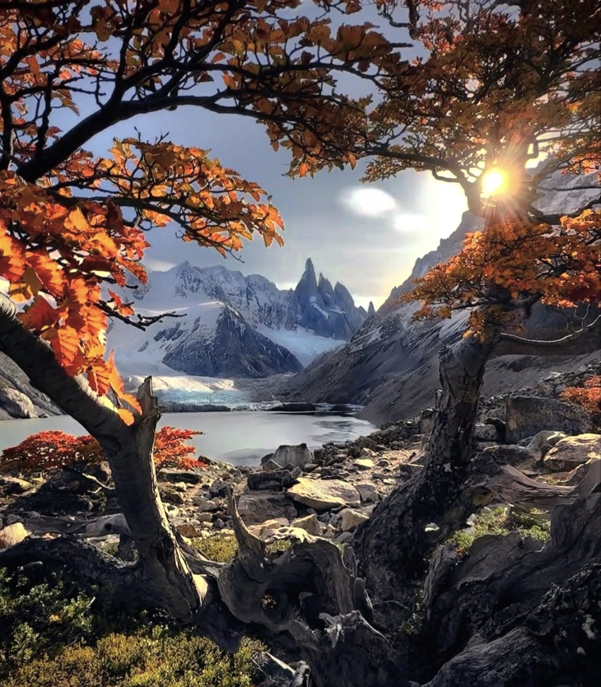
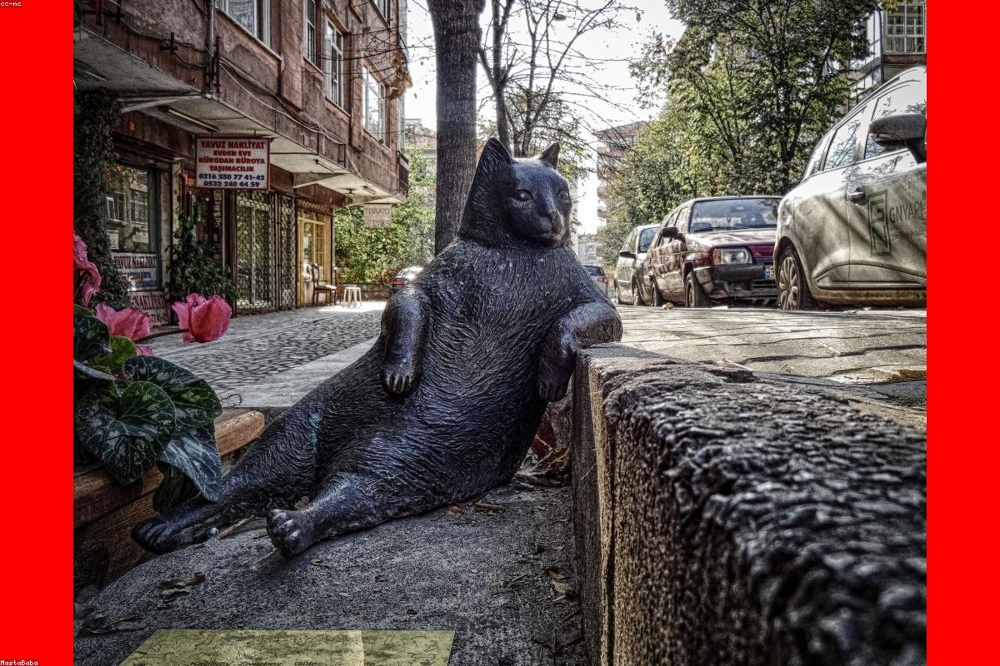
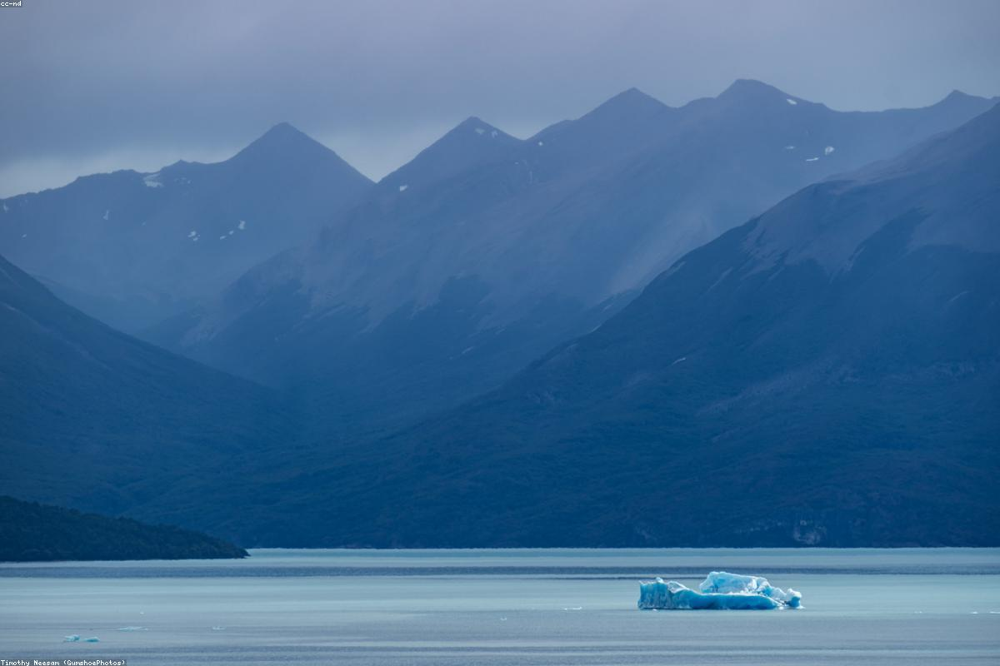
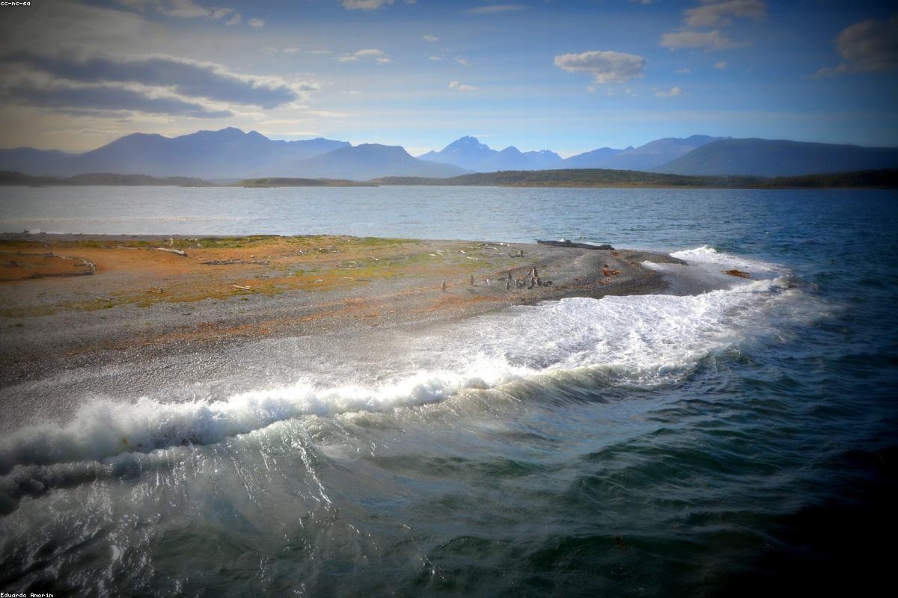
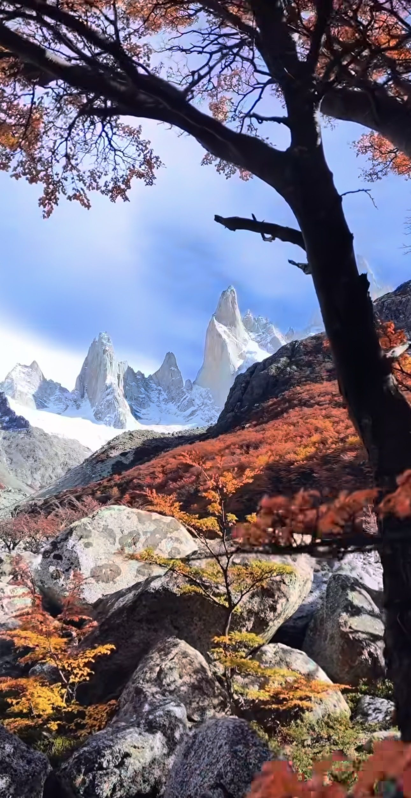
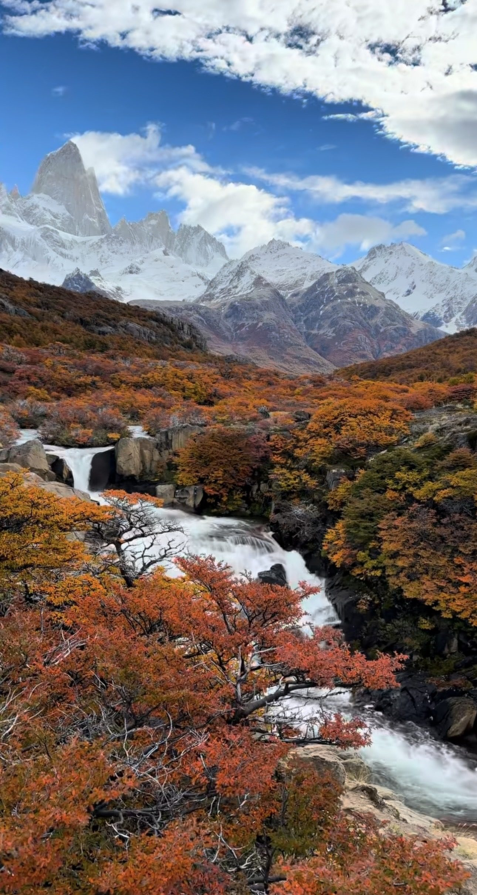

Фицрой и Серро-Торре
Два самых дерзких силуэта планеты и знаменитое розовое свечение на рассвете.
Авторское путешествие по самому югу планеты — от гранитных игл Фицроя до ледников Чили и «конца света» в Ушуае
Организаторы — Леонид Кутузов и Андрей Баранов
Есть места, до которых добираются только мечта и хорошие ботинки. Патагония — одно из них. Здесь ветер сбивает с ног на смотровых площадках, гранитные башни вырастают прямо из бирюзовых озёр, а ледники с грохотом обрушиваются в воду размером с дом. Мы пройдём её насквозь — от знаменитого Фицроя в Аргентине через чилийский Торрес-дель-Пайне к Ушуае, последнему городу перед Антарктидой. Двенадцать дней треккингов, ледников и тишины, какой нет больше нигде на Земле.
Что вас ждёт

Два самых дерзких силуэта планеты и знаменитое розовое свечение на рассвете.

Три гранитные башни Чили, вырастающие из ледникового озера.

Один из немногих «живых» ледников мира; навигация к синей стене льда вплотную.

Голубые айсберги, плавающие в озере, и долина Британико.

Водная экскурсия от Ушуаи к колонии пингвинов и маяку на краю света.

Самый южный город планеты и легендарный ужин с королевским крабом.
Маршрут по дням
Нажмите на локацию, чтобы раскрыть программу хайков и экскурсий.
Приземление в Эзейзе (EZE) вечером. Ночь в городе / зале ожидания перед утренним перелётом на юг.

Дни 1–3 Эль-Чальтен — столица треккинга АргентиныУтренний перелёт в Эль-Калафате и переезд в Эль-Чальтен — деревню у подножия Фицроя, в национальном парке Лос-Гласьярес. Над ней висят два легендарных силуэта: гранитная игла Серро-Торре и трёхтысячник Фицрой, чьи стены на рассвете на пару минут загораются розово-оранжевым.
Переезжаем через границу в Чили, в один из самых знаменитых нацпарков мира.
Дни 9–12
Ушуая — край земли
Перелёт в Ушуаю — самый южный город планеты, дальше только Антарктида. Отсюда уходили экспедиции к полюсу.
Карта маршрута
Буэнос-Айрес ✈ Эль-Калафате → Эль-Чальтен → Торрес-дель-Пайне → Эль-Калафате ✈ Ушуая ✈ Буэнос-Айрес
Схема перелётов и переездов — плейсхолдер. Финальную карту-картинку добавит Андрей.
Где живём

3 ночи
Эль-Чальтен · эстансия
3 ночи
Торрес-дель-Пайне, Чили · эстансия
2 ночи
Эль-Калафате · отель
3 ночи
Ушуая · отель
Для кого
Это активное приключение, а не расслабленный отдых. В программе несколько больших хайков по 18–22 км с наборами высоты до 900 метров и переменчивой патагонской погодой (ветер, дождь, солнце — всё за один день).
Тем, кто в нормальной форме, любит ходить пешком и готов к длинным дням на ногах.
Тем, кто ищет пляжный или экскурсионный отдых без нагрузок.
Базовая физическая подготовка обязательна; специальный альпинистский опыт — не нужен.
Стоимость
Организаторы
Нейрофизиолог, преподаватель йоги и медитации, президент Федерации йоги Санкт-Петербурга; автор путешествий.
Организатор активных авторских путешествий и приключений.
TODO: добавить короткие фото обоих и 2–3 строки про опыт совместных поездок.
Вопросы и ответы
Мест немного — путешествие маленькой группой. Напишите нам в Telegram, чтобы забронировать.
Написать в Telegram